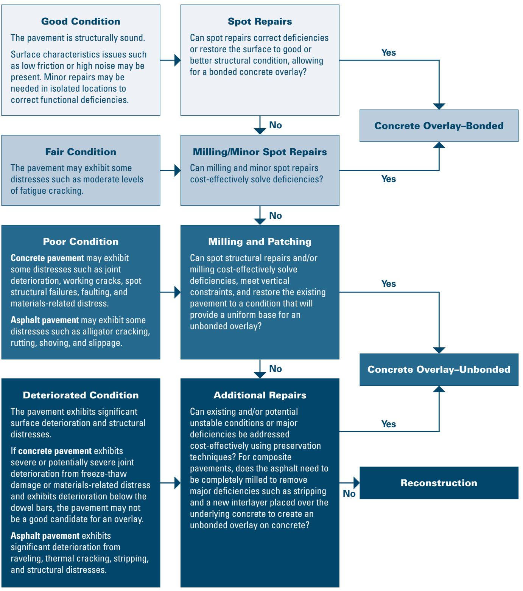
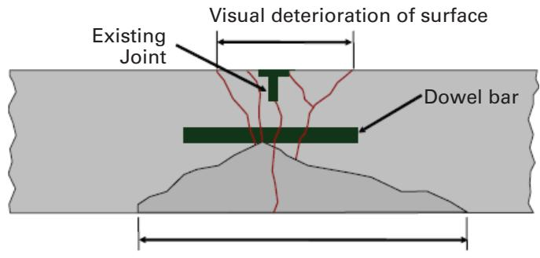
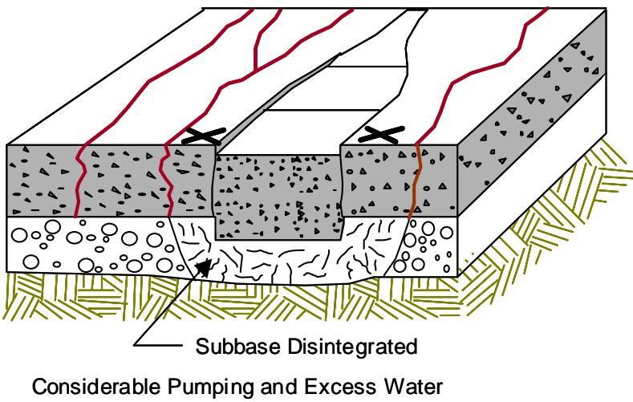
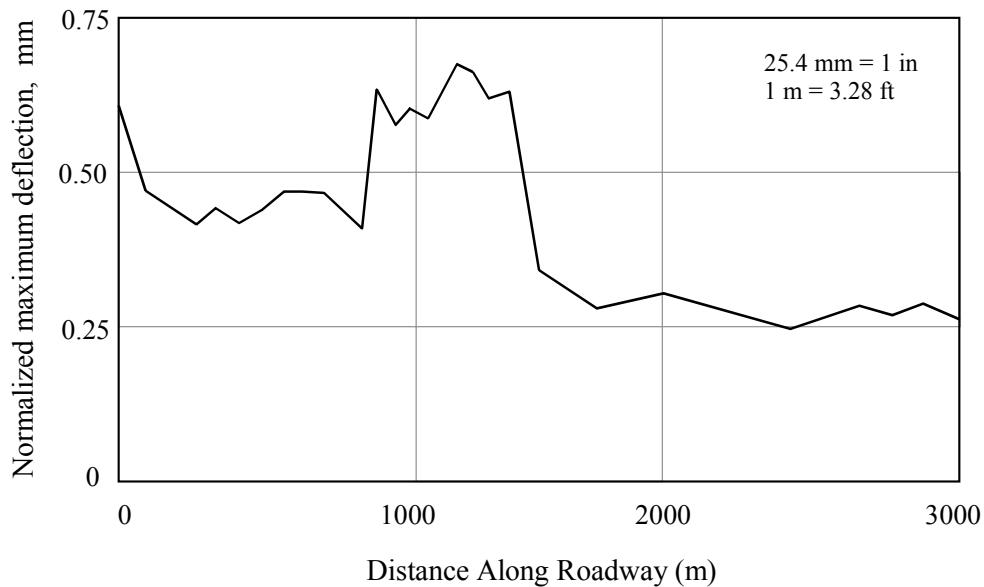

Pavement Condition Assessment
Pavement Condition Assessment is a systematic investigation that evaluates the existing structural integrity and functional performance of concrete, asphalt or composite roadways by integrating historical design and construction records with on‑site observations of distress, roughness, moisture, drainage, friction and other surface characteristics[1][2]. The assessment employs nondestructive field techniques—such as falling‑weight deflectometer measurements of deflections, load‑transfer efficiency and back‑calculated layer moduli, ground‑penetrating radar scans for thickness, voids and reinforcement location, and mandatory coring to verify layer types and thicknesses—as well as laboratory testing to quantify material properties and identify mechanisms like alkali‑silica reaction or freeze‑thaw damage[3][4]. The resulting qualitative distress inventory and quantitative performance indices feed pavement management systems, enabling engineers to determine whether the pavement meets owner‑defined “good condition” criteria, to diagnose causes of deterioration, and to select appropriate preservation or rehabilitation strategies based on trigger and limit values[5][1].
CP Tech Center Guides reports covering “Pavement Condition Assessment” also include the following subtopics: Field Evaluation Report Preparation, Field Testing Methods for Pavement Distress Assessment, Material Characterization and Strength Testing, and Pavement Distress Analysis.
Pavement Condition Assessment relies on Pavement Distress Analysis to record visible defects and infer their mechanisms through form-location relationships. [5][6] The procedure incorporates Field Testing Methods for Pavement Distress Assessment to quantify structural integrity and surface slip-resistance using nondestructive and destructive techniques, while Material Characterization and Strength Testing provides laboratory data to confirm distress causes in concrete pavements. [3][6] These inputs feed into the systematic consolidation performed by Field Evaluation Report Preparation, which segments corridors and establishes a factual baseline for determining preservation or rehabilitation strategies. [3][7]
Sources (10)
Sub-concepts (4)
Purpose and investigation objectives
The investigation evaluates the overall condition of the existing pavement, focusing on whether the subgrade still provides adequate support and whether drainage is functioning properly. The Pavement Condition Assessment evaluates the existing pavement’s structural and functional state by reviewing design and construction records, material and soil properties, traffic history, climate, and observed site conditions such as general distress, roughness (sags and swells), moisture problems, drainage, deflection, and friction. Pavement Condition Assessment evaluates the existing pavement’s structural integrity and functional performance by examining its overall condition, specific distress types such as faulting, cracking and spalling, surface smoothness and friction, and subsurface characteristics obtained from nondestructive testing like falling‑weight deflectometer deflections, load‑transfer efficiency, back‑calculated layer moduli, and ground‑penetrating radar measurements of thickness, voids and steel location. Pavement Condition Assessment evaluates the existing structural makeup of a roadway by determining each pavement layer’s material type and thickness, the types and thicknesses of the base and subbase courses, and the classification of the underlying subgrade soil. Pavement Condition Assessment evaluates the structural and functional state of existing pavement by systematically collecting data on distress, roughness, friction, deflections, drainage, material and soil properties, traffic loads, climate and geometry. It must answer if the current pavement state permits feasible maintenance or repair and whether any loss of subgrade support or drainage deficiencies need to be corrected. The investigation must answer whether the pavement meets the owner’s definition of good condition, possesses sufficient structural capacity for preventive maintenance, or requires rehabilitation because its condition or underlying material distress precludes low‑intensity treatments. The investigation must answer how severe and extensive each distress is, whether the measured performance indicators exceed agency action thresholds for preservation, what the underlying structural capacity and material conditions are that will dictate appropriate maintenance or repair strategies, and whether the pavement can support current and future traffic loads while providing a smooth, safe riding surface. What are the causes of the observed deterioration? Which preservation or rehabilitation alternatives are feasible? What quantities of material are required for each alternative? How quickly is the pavement deteriorating and what are the life‑cycle cost implications of competing treatment options? The investigation must answer what the current layer configuration is—including construction year—how thick each layer and supporting course are, and what soil conditions exist beneath the pavement. identify whether any asphalt layers are prone to stripping. - determine the causes and extent of pavement deterioration - answer whether observed conditions have reached trigger values define the point when pavement preservation may be appropriate, whereas limit values define the point at which the pavement is in need of major structural improvements. - identify feasible repair or preservation alternatives, estimate material quantities, assess rate of deterioration and compare life‑cycle costs. [1][2][3][4][5]
The following figure illustrates the typical impacts of preventive maintenance and rehabilitation on concrete pavement condition.
 Illustration of typical impacts of preventive maintenance and rehabilitation on concrete pavement condition (Smith, Hoerner, and Peshkin 2008) [2]
Illustration of typical impacts of preventive maintenance and rehabilitation on concrete pavement condition (Smith, Hoerner, and Peshkin 2008) [2]
The figure displays a graph plotting Pavement Condition against Time, showing a continuous decline in structural integrity from Good to Poor. It demonstrates that applying preventive maintenance treatments at specific intervals can temporarily restore condition and extend the service life of the pavement before it reaches critical failure levels. The diagram further illustrates that when preventive measures are no longer sufficient and the pavement deteriorates significantly, rehabilitation is required to restore structural capacity.
[1] — Considerations (p. 28); [2] — Ch. 6 (pp. 67–68); [3] — Ch. 2 (p. 32), Ch. 3 (pp. 37–73), Ch. 12 (p. 267); [4] — Ch. 1 (pp. 21–26); [5] — Ch. 3 (pp. 30–71), Ch. 11 (p. 215)
The findings from a pavement condition assessment provide the factual foundation that enables engineers to make informed planning, design, maintenance, and rehabilitation decisions. Proper assessment of existing pavement conditions is necessary to determine feasibility, and any loss of subgrade support or drainage problems must be corrected before further work. The systematic findings—historical record review, on‑site distress observations, field tests such as deflection, roughness and friction measurements, and laboratory characterizations of concrete strength, stiffness and petrography—provide a clear picture of the pavement’s current structural capacity and functional performance. Upon completion of the evaluation, a determination is made whether the pavement meets owner‑defined criteria for good condition and is suitable for preventive maintenance, or whether structural improvement through rehabilitation is required. When materials‑related distress mechanisms (e.g., alkali‑silica reactivity or freeze‑thaw damage) are identified, they steer decision‑makers away from maintenance strategies that would not address the underlying cause.
The assessment supplies both qualitative information—distress types, drainage conditions, surface characteristics—and quantitative data such as falling weight deflection values, load‑transfer efficiency, back‑calculated layer moduli, concrete elastic modulus, subgrade reaction (k‑value), roughness and friction. These inputs feed pavement management systems, allowing engineers to decide where preservation is appropriate, which treatment will work best, and when it should be applied. By cataloguing distress type, severity and extent and linking observations to load‑related or material/climate causes, planners can prioritize projects, allocate budget, and select treatments that address the underlying mechanism. The data reveal why deterioration is occurring, enable repair quantity estimates, support life‑cycle cost comparisons, and define preservation windows or action thresholds.
Review of as‑built plans, pavement management records, coring and material testing further verifies existing layer types, thicknesses, base/subbase configurations, subgrade classification, and any mixture‑design data, allowing a preliminary condition rating (good, fair, poor, deteriorated) to be assigned. This documented baseline guides selection of overlay designs, required overlay thicknesses, identification of stripping‑prone asphalt layers, and prioritization of rehabilitation strategies. Trigger values define when preservation may be appropriate, whereas limit values indicate the need for major structural improvements; comparing condition results against these thresholds enables planners to decide between routine maintenance, resurfacing, or full rehabilitation, thereby informing project planning, design specifications, budgeting, scheduling, and long‑term asset management. [1][2][3][4][5]
The figure below illustrates how determining the appropriate concrete overlay solution relies on assessing the existing pavement condition and identifying necessary preliminary repairs.

Decision flowchart for selecting concrete overlay treatments based on pavement condition. [3]The figure displays a decision matrix that categorizes existing pavement into four structural conditions: Good, Fair, Poor, and Deteriorated.
[1] — Considerations (p. 28); [2] — Ch. 6 (pp. 67–68); [3] — Ch. 2 (p. 32), Ch. 3 (pp. 37–73), Ch. 12 (p. 267); [4] — Ch. 1 (pp. 21–26); [5] — Ch. 3 (pp. 30–71), Ch. 11 (p. 215)
Scope and applicability
Pavement Condition Assessment is appropriate for concrete, asphalt and composite pavements when the existing structure – “Pavement layer types and thicknesses”, “Base and subbase types and thicknesses” and “Subgrade soil type” – is documented along with design and construction history (“Existing pavement structure/history (including past preservation treatment applications)”). The method can be applied to any network where such background information is available, allowing evaluation of both structural and functional performance. Structural layers from the wearing surface through slab or asphalt courses down to the subgrade are examined using nondestructive techniques such as “Falling weight deflectometer (FWD) data (e.g., deflections, load transfer efficiencies, and backcalculated layer moduli)” and “Ground‑penetrating radar (GPR) data (e.g., thickness, voids, and steel location)”. Distress identification covers “Distress types (e.g., faulting, cracking, and spalling) along with severity levels and amounts”, “Slab cracking, corner breaks, faulting, and spalling are candidate distresses”, as well as “general distress observations, an assessment of roughness, particularly sags and swells, and observation of moisture problems.” Functional issues such as “joint load transfer, roughness, texture, and surface friction could also be included” and “roughness and surface friction can also be included” are recorded. Material‑related mechanisms are addressed through “materials-related distress (MRD) mechanism, such as alkali‑silica reactivity or freeze‑thaw damage”. Site‑specific conditions that influence suitability include “Any loss of subgrade support or drainage problems must be corrected”, “areas of poor drainage, significant changes in topography (cut/fill sections), and changes in traffic levels or patterns can also be overlaid”, and the broader factors noted in “deflections, soil types, and traffic volumes”. The assessment also identifies special concerns such as “identify whether any asphalt layers are prone to stripping”. By integrating these structural, functional, material‑related and environmental factors, the assessment determines feasibility of maintenance or rehabilitation (“Proper assessment of existing pavement conditions is necessary to determine feasibility.”). [1][2][3][4][5]
The following figure illustrates how center slab deflection varies along a project when normalized to a standard load.
 Center slab deflection variation along a project normalized to a 9,000 lbf loading. [3]
Center slab deflection variation along a project normalized to a 9,000 lbf loading. [3]
The figure plots the normalized maximum deflection in mils against the distance along the roadway in feet, showing significant variability across the measured section. This data represents nondestructive field techniques used to evaluate structural integrity and identify subsections where distress or poor moisture conditions may be adversely affecting the pavement. Such measurements are essential for backcalculation of concrete and subgrade layer properties to assess structural condition.
[1] — Considerations (p. 28); [2] — Ch. 6 (pp. 67–68); [3] — Ch. 2 (p. 32), Ch. 3 (pp. 42–73); [4] — Ch. 1 (pp. 21–26); [5] — Ch. 3 (pp. 35–44)
The guides note that pavement condition assessment is limited because it relies on observable distress and standard field tests, which may not reveal underlying material‑related distress mechanisms such as alkali‑silica reactivity or freeze‑thaw damage; consequently a visual rating can misclassify a deteriorating section. In addition, although condition indexes and ratings are useful in planning and programming, it is important when developing a preservation program to manage the actual distresses separately, because aggregate scores hide the specifics of cracking, faulting, spalling or drainage problems. Finally, the size of a project often dictates the time and funding levels that can justifiably be spent on pavement evaluation, so low‑volume roads frequently receive only surface distress and drainage surveys while more detailed structural or material testing is omitted. When hidden material mechanisms are suspected, when individual distress patterns indicate potential structural deficiencies, or when project importance, traffic loading, or a long interval between survey and construction reduces confidence in the initial data, supplemental investigations—such as laboratory materials characterization, nondestructive testing (deflection, GPR, ultrasonic tomography), field sampling, or detailed mechanistic‑empirical analysis—should be employed to verify capacity and select appropriate treatments. [2][3][4][5]
The figure below illustrates how subsurface deterioration can extend significantly beyond visible surface distress.

Illustration of distress extent at the bottom of a concrete slab extending beyond surface observations. [2]The figure displays a cross-section of a concrete pavement containing an existing joint and a dowel bar, with red lines indicating cracks that propagate from the bottom of the slab upwards to the surface.
[2] — Ch. 6 (pp. 67–68); [3] — Ch. 2 (p. 32), Ch. 3 (pp. 37–73); [4] — Ch. 1 (p. 21); [5] — Ch. 3 (pp. 30–71)
Existing information and records
Field investigation must close a range of record‑based gaps, inconsistencies, and uncertainties that otherwise undermine confidence in a pavement condition assessment. Across the guides the following deficiencies are repeatedly identified:
- Missing or incomplete historical design and construction information – records often lack “incomplete design and construction documentation” and “unclear material and soil property data,” leaving the original pavement type and subgrade conditions undocumented.
- Uncertain past performance, maintenance actions, traffic and climate histories – agencies frequently have “undocumented past performance or maintenance actions” and “ambiguous traffic or climate histories,” making it difficult to attribute observed failures to loading or environmental effects.
- Out‑of‑date or absent distress surveys and severity ratings – existing data may contain “missing or outdated information on past treatments,” “incomplete severity ratings for faulting, cracking or spalling,” and “limited nondestructive testing results for voids or delamination.” When “distress and drainage surveys are collected long before construction” the recorded quantities can become invalid.
- Lane‑specific and time‑series inconsistencies – records often mask performance differences, as noted by “inconsistencies between inner‑lane and outer‑lane conditions can … mask lane‑by‑lane performance differences” and the lack of “absent time‑series condition data” creates uncertainty about when deficiencies began and how quickly they are progressing.
- Insufficient nondestructive testing coverage – tools such as MIRA/PSPA may suffer from “excess dust, occasional signal disruption caused by pavement surface tining/grooving,” an “inability to consistently detect shallow delamination (<2 in.)” and “limited testing speed,” leaving hidden voids, delaminations or thickness variations unverified.
- Absence of verified structural measurements – the guides stress that “existing documentation frequently omits verified measurements of layer thickness and the presence of stripping in asphalt layers” and that “Note that coring is not optional”; every project should be cored to confirm pavement thickness, condition, and susceptibility to stripping.
- Missing ancillary drainage and earthwork details – strip charts often lack “cut‑and‑fill locations, ditch depths, and drainage outlet conditions,” which are essential for understanding moisture‑related performance issues.
- Overall paucity of comprehensive design, construction, subgrade, and performance parameters – the historical files frequently “lack comprehensive design, construction, subgrade, and performance parameters,” a shortfall that contributes to many premature failures attributed to an inadequate understanding of deterioration causes.
Resolving these gaps through on‑site verification—general distress observation, roughness assessment (including sags and swells), moisture problem identification, detailed distress and drainage surveys, updated nondestructive testing (FWD, GPR, coring), and lane‑by‑lane analysis—provides the confidence needed to select appropriate maintenance or rehabilitation strategies. [2][3][4][5]
[2] — Ch. 6 (pp. 67–68); [3] — Ch. 2 (p. 32), Ch. 3 (pp. 49–58); [4] — Ch. 1 (pp. 21–26); [5] — Ch. 3 (pp. 43–71)
Visual inspection and condition assessment
The guides concur that a Pavement Condition Assessment should begin with “general distress observations” and evaluate surface texture, including roughness features such as sags and swells and any moisture‑related problems. The assessment must record the full suite of “Distress types (e.g., faulting, cracking, and spalling) along with severity levels and amounts,” and further “identify full- or partial-depth cracking, voids, or areas of debonding, joint deterioration, and poor consolidation.” In addition, the guides stress that “Any loss of subgrade support or drainage problems must be corrected,” so inspectors also note poor drainage outlets, cut‑and‑fill transitions, ditch depths, settlement or erosion indications, and other water‑flow deficiencies. [1][2][3][5]
The importance of addressing drainage deficiencies is illustrated in the figure below, which shows the improvement achieved by adding a longitudinal edgedrain.
 Schematic of a longitudinal edgedrain installation reducing the flow path within a granular base. [3]
Schematic of a longitudinal edgedrain installation reducing the flow path within a granular base. [3]
The figure displays a cross-section of pavement layers, including a surface and a granular base containing water droplets. Arrows indicate that the installation of an edgedrain creates a new shortened flow path for moisture to exit through an outlet.
[1] — Considerations (p. 28); [2] — Ch. 6 (pp. 67–68); [3] — Ch. 2 (p. 32), Ch. 3 (pp. 42–58); [5] — Ch. 3 (pp. 30–44)
The guides require that each observed distress be first classified by its type—examples include faulting, cracking, spalling, slab cracking, corner breaks, or other concrete‑related defects. Once the type is established, a severity rating is assigned for every measurement interval. The extent of the distress is then quantified and recorded as the continuous length over which that condition persists. Location is documented by plotting each occurrence along the project strip chart in station or milepost terms; bar‑chart and profile plots are prepared to show how severe a distress is and over what length it occurs. If prepared in bar chart form, these profile plots can depict both the extent and severity at each measurement interval. One useful way of summarizing the results is through a strip chart that shows the occurrence of various distresses over the length of the project. All recorded data are entered into the agency’s pavement management system where they can be visualized in bar‑chart profile plots or strip charts, often with overlays for ancillary factors such as traffic levels, drainage conditions, subgrade type, topographic changes, roughness or friction. This permanent visual summary supports repair quantity estimates, performance monitoring, and further testing decisions. [3][5]
The following figure illustrates an example of such a project strip chart.
 Example of a project strip chart showing concrete slab cracking severity and roughness over distance. [3]
Example of a project strip chart showing concrete slab cracking severity and roughness over distance. [3]
The figure displays a project strip chart that plots the percentage of cracked slabs along the length of a roadway, categorized by drainage conditions (poor or fair) and traffic levels (high or low). The bar charts within the strip chart represent the severity of distress as Low, Medium, or High, while a line graph overlays the International Roughness Index (IRI) to correlate surface condition with roughness. This visualization supports pavement condition assessment by providing a permanent visual summary of distress extent and severity that assists in identifying troublesome areas for further testing.
[3] — Ch. 2 (p. 32), Ch. 3 (pp. 42–50); [5] — Ch. 3 (pp. 35–44)
Field measurements and testing
The assessment begins with a “visual distress survey that records faulting, cracking, spalling and other surface defects together with severity levels” and a complementary “drainage survey to identify water‑related problems”; a drainage survey also “identifies moisture issues”. Roughness profiling quantifies ride quality: “roughness testing quantifies ride quality by detecting sags, swells and other irregularities” and “Roughness values indicate how smooth the riding surface is”. Friction evaluation includes “friction testing evaluates the skid resistance of the surface”; “friction/macrotexture tests” also measure safe traction: “friction tests reveal the pavement’s ability to provide safe traction.” Noise testing may be performed to assess acoustic comfort. Structural capacity is evaluated through “nondestructive deflection testing measures the slab’s stiffness to infer remaining structural capacity” and “deflection testing, most commonly with a Falling Weight Deflectometer (FWD), to obtain deflections, load‑transfer efficiency, back‑calculated layer moduli, concrete elastic modulus and subgrade reaction (k‑value)”; the FWD is “established as the current worldwide standard.” Additional nondestructive methods include “Ground‑Penetrating Radar (GPR) provide pavement thickness, internal void detection and steel reinforcement location”, “ultrasonic tomography using a MIRA device can measure concrete slab thickness, locate embedded reinforcement, and reveal full‑ or partial‑depth cracking, voids, debonding, joint deterioration, and poor consolidation”, and the “Portable Seismic Property Analyzer (PSPA) – combining impact‑echo and ultrasonic surface‑wave testing – further identifies physically degraded areas.” Coring is required: “coring is not optional”; “Every project should be cored to verify the existing pavement thickness and condition” and it also allows identification of “whether any asphalt layers are prone to stripping.” Finally, “targeted field sampling provides material specimens for laboratory characterization of concrete strength and durability” and “limited field material sampling and laboratory testing supply definitive concrete strength and other material properties for calibration.” [2][3][4][5]
The following figure illustrates the recommended deflection testing locations for jointed concrete pavements.
 Recommended deflection testing locations for jointed concrete pavements. [5]
Recommended deflection testing locations for jointed concrete pavements. [5]
The figure illustrates a schematic layout of a jointed concrete pavement, indicating specific points where structural evaluation is performed at regular intervals along the roadway. It distinguishes between “Basin testing” conducted in the center of the slab and “Load-transfer testing” positioned near transverse joints on both the approach and leave sides to assess structural integrity.
[2] — Ch. 6 (pp. 67–68); [3] — Ch. 2 (p. 32), Ch. 3 (pp. 37–73), Ch. 12 (p. 267); [4] — Ch. 1 (p. 26); [5] — Ch. 3 (pp. 35–71), Ch. 11 (p. 215)
Sampling and laboratory investigation
Pavement condition assessment requires coring of the entire project to confirm the thickness and overall condition of each pavement layer, with particular attention to any asphalt layers that might be susceptible to stripping. The extent of coring—how many cores are taken, where they are located, how deep they go, and how often they are sampled—is guided by the functional classification of the roadway, as summarized in the referenced Table 2.2. [4]
[4] — Ch. 1 (p. 26)
The laboratory component of a pavement condition assessment calls for a suite of tests that quantify mechanical performance, material composition, and potential distress mechanisms. Tests include compressive‑strength and stiffness measurements on concrete and bound layers, petrographic examinations together with density and aggregate‑gradation analyses to characterize the constituents of the pavement matrix. Core extraction is required on each project to confirm existing pavement thickness and overall condition, while additional material testing is performed to detect susceptibility of any asphalt layers to stripping. Collectively these laboratory procedures evaluate structural properties (strength, stiffness, thickness), material quality (density, gradation, petrographic features) and functional deterioration mechanisms such as alkali‑silica reaction, freeze‑thaw damage, and asphalt binder stripping. [2][4]
[2] — Ch. 6 (pp. 67–68); [4] — Ch. 1 (p. 26)
Structural and functional performance
The assessment of pavement condition requires a set of measurements that together reveal both structural capacity and functional performance. Structural capacity is evaluated through “nondestructive deflection testing” such as the “Falling weight deflectometer (FWD) data (e.g., deflections, load transfer efficiencies, and backcalculated layer moduli)” which allows “back‑calculation … yields layer properties such as concrete elastic modulus, subgrade reaction (k‑value) and load‑transfer efficiency”. Complementary nondestructive methods include “Ground‑penetrating radar … to obtain accurate layer‑thickness information and locate voids”, and direct determination of the “strength and stiffness of concrete and bound layers”. Detailed dimensional data—“Pavement layer types and thicknesses, by year of construction”, “Base and subbase types and thicknesses”, and “Subgrade soil type”—provide the primary basis for judging structural adequacy.
Functional condition is judged by quantifying surface characteristics. The guides list “roughness and friction testing” and “Surface profile/smoothness” as essential to assess ride quality, while “surface friction and macrotexture” together describe skid resistance. Additional functional indicators include “surface roughness, friction, and texture” and the observation of distress types such as “slab cracking, corner breaks, faulting, spalling”. These measurements are compiled with traffic and soil information to form overall condition indexes. [2][3][4][5]
The figure below illustrates how friction is measured using the California CT-342 device at various angles relative to the pavement’s centerline.
 Friction index relative to longitudinal travel for various concrete pavement surface textures at varying deviation angles. [3]
Friction index relative to longitudinal travel for various concrete pavement surface textures at varying deviation angles. [3]
The figure plots the friction index of four different concrete pavement surface textures (CDG, Random transverse tined, Astro turf, and Grooved) as a function of the angle of deviation from the direction of travel. The data indicates that for grooved surfaces, friction increases significantly as the vehicle deviates laterally, whereas other textures show minimal change or a decrease in friction relative to longitudinal travel.
[2] — Ch. 6 (pp. 67–68); [3] — Ch. 2 (p. 32), Ch. 3 (pp. 37–73), Ch. 12 (p. 267); [4] — Ch. 1 (pp. 21–23); [5] — Ch. 3 (pp. 30–71), Ch. 11 (p. 215)
The distress survey shows that slab‑cracking severity tracks the traffic loading: sections experiencing high traffic and a silty‑clay subgrade exhibit the worst cracking condition, whereas low‑traffic segments on granular subgrade display the best performance. This pattern indicates that the measured conditions exceed what the original design assumptions likely anticipated for high‑traffic zones, suggesting those areas are approaching or have passed acceptable distress thresholds and may require treatment to preserve remaining service life, while the low‑traffic sections remain within expected limits. The pavement evaluation first determines the structural condition, which indicates whether the existing layers can sustain the current and projected traffic loads, and then assesses functional condition to verify that the riding surface remains smooth and safe. Structural adequacy is judged from condition and drainage surveys, deflection testing, and material sampling, while functional adequacy comes from roughness and friction measurements. [5]
The following figure illustrates an example project strip chart used in this assessment process.
 Example project strip chart. [5]
Example project strip chart. [5]
The figure displays a strip chart that plots the percentage of cracked concrete slabs along the length of a pavement project, categorized by severity levels of low, medium, and high. This visualization integrates distress data with environmental factors such as drainage conditions (poor to fair) and traffic loading (high to low), which is a standard method for evaluating the structural integrity of roadways.
[5] — Ch. 3 (pp. 43–44), Ch. 11 (p. 215)
Data interpretation and diagnosis
The guides agree that a comprehensive pavement condition assessment begins with a review of historical design, construction, traffic, and climate records together with any available performance data. Visual observations are then performed during an initial site visit; the surveys record “type, severity and extent” of distress—including “general distress, roughness, sags, swells, moisture problems, slab cracking, corner breaks, faulting and spalling”—to help distinguish load‑related from material or climate‑related problems. These observations are supplemented by field measurements: detailed distress and drainage surveys, nondestructive deflection testing (e.g., Falling Weight Deflectometer data such as deflections, load‑transfer efficiencies, and back‑calculated layer moduli), roughness, friction, texture, noise and other functional tests that quantify structural uniformity and ride quality. Core or field samples are taken for laboratory analysis; the labs determine concrete strength, stiffness, petrographic characteristics, density, and gradation, providing material properties used to calibrate and verify the nondestructive test results. Performance data such as traffic volumes, axle loads, climate conditions and drainage characteristics are also incorporated.
All of these inputs are integrated by overlaying the visual distress data with the measured structural and functional parameters on longitudinal strip or profile charts. By comparing the combined dataset to established trigger and threshold values, analysts can assess whether the pavement meets the owner’s definition of good condition, evaluate its structural capacity for preventive maintenance, identify causative mechanisms (e.g., alkali‑silica reactivity, freeze‑thaw damage), estimate rates of deterioration, and select appropriate preservation or rehabilitation strategies. [2][3][5]
The figure below illustrates the typical effects of preventive maintenance and rehabilitation on pavement performance.
 Illustration of typical effects of preventive maintenance and rehabilitation on pavement performance. [5]
Illustration of typical effects of preventive maintenance and rehabilitation on pavement performance. [5]
The figure displays a graph plotting Pavement Condition against Time, showing how different management strategies affect the structural integrity of roadways over their lifecycle. A solid blue curve represents the natural deterioration of pavement from Good to Poor condition without intervention.
[2] — Ch. 6 (pp. 67–68); [3] — Ch. 2 (p. 32), Ch. 3 (pp. 37–73), Ch. 12 (p. 267); [5] — Ch. 3 (pp. 30–71), Ch. 11 (p. 215)
The guides consistently identify “inadequate drainage” as a primary driver of the observed pavement distress. They also agree that “loss of subgrade support” or generally insufficient subgrade stiffness, often confirmed through deflection or other nondestructive testing, reduces structural capacity and leads to cracking, faulting and spalling. In sections with high traffic on silty‑clay subgrades, several sources note that “overloading” combined with weak support intensifies the condition, while low‑traffic areas on granular subgrades perform markedly better. Material deterioration linked to environmental exposure is highlighted where moisture problems are evident; specific “materials-related distress (MRD) mechanism, such as alkali‑silica reactivity or freeze‑thaw damage” are cited as contributors, and aging or climate‑related degradation can further exacerbate the distress. Construction defects and simple aging are mentioned only marginally and are not treated as dominant causes across the sources. [1][2][3][5]
The following figure illustrates how such subgrade and drainage issues can manifest as potential deterioration of the subbase near CRCP structural distress.

Cross-section of a concrete pavement showing subbase disintegration and pumping near a structural punchout. [5]The figure displays a cross-sectional view of a rigid pavement structure where the granular subbase layer beneath the concrete slab is shown as disintegrated and disturbed by water flow. Red lines on the surface indicate cracks, while black ‘X’ marks denote a structural distress known as a punchout, which is associated with considerable pumping and excess water within the subbase.
[1] — Considerations (p. 28); [2] — Ch. 6 (pp. 67–68); [3] — Ch. 3 (pp. 42–73); [5] — Ch. 3 (pp. 35–71)
Findings, confidence, and next actions
Pavement condition assessment consistently supports a range of decisive conclusions. The guides agree that it can “properly assess[] existing pavement conditions” to establish whether a section is feasible for maintenance or repair, and that the assessment enables decision‑makers to judge if a project is a suitable candidate for preservation, which treatments are feasible, and which option is most cost‑effective. Performance indicators – such as overall condition indexes, smoothness measures and key distress levels – “can be used to establish the pavement preservation window” and to identify the underlying causes and spatial extent of deterioration. By integrating structural data (deflection profiles, load‑transfer capacity) with functional measurements (roughness, friction, drainage), the assessment provides both qualitative insight into the causes of distress and quantitative information needed to estimate repair quantities, assess deterioration rates and perform life‑cycle cost comparisons of alternative treatments. It also reliably identifies pavement type, verifies existing thickness through mandatory coring, and supplies a preliminary condition rating that forms the basis for selecting an appropriate concrete overlay design. When materials‑related distresses such as alkali‑silica reactivity or freeze‑thaw damage are present, the assessment can determine that preventive maintenance alone would be ineffective and that structural rehabilitation is required. Trigger and limit values derived from distress and deflection data give clear decision points for preservation versus major reconstruction, while repeated surveys create a permanent record to support long‑term monitoring.
However, several limitations and uncertainties remain. The reliability of conclusions depends on correcting any loss of subgrade support or drainage problems before the assessment can be trusted, and on collecting the right mix of data – distress and drainage surveys, roughness, friction, material sampling and appropriate nondestructive testing – which may be constrained by project size, budget and schedule. Condition indexes alone “do not capture all risks” when individual distresses must be managed separately or hidden voids/delamination are present; follow‑up site visits may be required to confirm feasibility. Thresholds for triggering preservation are “guidance rather than fixed standards”, and trigger values for frequency or severity of distresses do not exist, making the rating process inherently subjective and reliant on engineering judgment. Nondestructive testing techniques have detection limits (e.g., shallow delamination < 2 in.) and can be affected by surface conditions or scanning speed, introducing interpretation uncertainty. Gaps between survey collection and construction, missing ancillary information such as drainage outlet condition, and variability in field conditions can reduce confidence in the final treatment decision, sometimes necessitating a follow‑up survey to ensure that contract quantities remain valid. [1][2][3][4][5]
[1] — Considerations (p. 28); [2] — Ch. 6 (pp. 67–68); [3] — Ch. 2 (p. 32), Ch. 3 (pp. 37–73), Ch. 12 (p. 267); [4] — Ch. 1 (pp. 21–26); [5] — Ch. 3 (pp. 30–71), Ch. 11 (p. 215)
After a Pavement Condition Assessment, the guides recommend a sequence of actions: first, “Any loss of subgrade support or drainage problems must be corrected.” The pavement’s condition is then checked against owner‑defined criteria – “verify whether the pavement meets the owner‑defined “good condition” criteria and has adequate structural capacity; if not, additional laboratory characterization—such as strength, stiffness and petrographic analysis—to confirm material‑related distress (e.g., alkali‑silica reactivity or freeze‑thaw damage) is required.” Ongoing “continued monitoring of moisture, drainage and roughness.” Design reviews must “focus on the identified deficiencies, and corrective actions must prioritize rehabilitation treatments that directly address the underlying MRD rather than generic preventive maintenance.” Mandatory field verification includes “coring is not optional” and “Every project should be cored to verify the existing pavement thickness and condition and to identify whether any asphalt layers are prone to stripping.” Supplemental nondestructive investigations are required – “supplemental nondestructive testing such as falling‑weight deflectometer measurements of deflection and load‑transfer efficiency and ground‑penetrating radar scans for layer thickness, voids and steel location should be performed to confirm structural capacity and uncover hidden delamination.” Functional surface checks add “Surface‑characteristic measurements—including noise, roughness, friction and texture—provide a functional performance baseline.” Design checks must also “evaluate current and projected traffic loads, climatic conditions, and the expected service‑life extension of candidate treatments to ensure cost‑effectiveness.” Based on the identified deficiencies, “Corrective actions are then selected to address the specific deficiencies identified: crack sealing, joint restoration, surface grinding, localized patching, slab grinding, reinforcement corrosion mitigation, drainage improvements, or overlay applications.” The condition data are compiled through a comprehensive survey – “compile historical design and construction records and conduct a detailed distress survey that classifies type, severity and extent.” and “A pavement distress survey is the first and most fundamental pavement evaluation procedure.” Nondestructive deflection testing provides multiple insights – “Nondestructive deflection testing … falling weight deflectometer … can be used in a number of ways, including development of pavement deflection profiles, backcalculation of layer properties, determination of load transer capabilities, and evaluation of the potential for voids at slab corners.” Decision thresholds are set by “Trigger values define the point when pavement preservation may be appropriate, whereas limit values define the point at which the pavement is in need of major structural improvements.” Ongoing performance tracking uses “plotting measured distresses—cracking, faulting, spalling—and performance metrics in bar or strip‑chart surveys… Repeat strip‑chart surveys are used to confirm progression rates before implementation of repairs” and “Continuous strip‑chart monitoring of plotted distress data tracks trends and confirms that corrective actions remain effective over time.” Moisture management is addressed through a drainage survey – “A drainage survey must accompany the distress survey to locate moisture problems; “Drainage surveys are performed as part of a pavement distress survey in order to assess the overall drainage conditions of the existing pavement.”” Finally, functional ride quality is verified by “Functional performance should also be evaluated through roughness, surface friction and texture measurements.” [1][2][3][4][5]
The following figure illustrates how deflection varies along a project to help evaluate structural capacity and uncover hidden issues.

Plot of normalized maximum deflection versus distance along a roadway. [5]The figure displays a line graph plotting the variation in pavement deflection over a specific project length, with the vertical axis representing normalized maximum deflection and the horizontal axis indicating distance along the roadway. This visualization supports the assessment of uniformity of support conditions by graphically evaluating how deflections vary along a project, which helps identify subsections where distress or poor moisture conditions may be affecting the pavement.
[1] — Considerations (p. 28); [2] — Ch. 6 (pp. 67–68); [3] — Ch. 2 (p. 32), Ch. 3 (pp. 37–73); [4] — Ch. 1 (p. 26); [5] — Ch. 3 (pp. 35–71)
Related Concepts
- Field Evaluation Report Preparation
- Field Testing Methods for Pavement Distress Assessment
- Material Characterization and Strength Testing
- Pavement Distress Analysis
References
- S. Garber, R. O. Rasmussen, and D. Harrington, "Guide to Cement-Based Integrated Pavement Solutions," Institute for Transportation, Iowa State University, 2011. [Online]. Available: https://www.cptechcenter.org/wp-content/uploads/2018/08/IPS.pdf
- T. Van Dam, P. Taylor, G. Fick, D. Gress, M. Van Geem, and E. Lorenz, "Sustainable Concrete Pavements: A Manual of Practice," National Concrete Pavement Technology Center, 2011. [Online]. Available: https://www.cptechcenter.org/wp-content/uploads/2018/03/Sustainable_Concrete_Pavement_508.pdf
- K. Smith, M. Grogg, P. Ram, K. Smith, and D. Harrington, "Concrete Pavement Preservation Guide (Third Edition)," National Concrete Pavement Technology Center, 2022. [Online]. Available: https://www.cptechcenter.org/wp-content/uploads/2022/08/concrete_pvmt_preservation_guide_3rd_edition_web.pdf
- G. Fick, J. Gross, M. B. Snyder, D. Harrington, J. Roesler, and T. Cackler, "Guide to Concrete Overlays (Fourth Edition)," National Concrete Pavement Technology Center, 2021. [Online]. Available: https://www.cptechcenter.org/wp-content/uploads/2021/11/guide_to_concrete_overlays_4th_Ed_web.pdf
- K. D. Smith, T. E. Hoerner, and D. G. Peshkin, "Concrete Pavement Preservation Workshop," National Concrete Pavement Technology Center, 2008. [Online]. Available: https://www.cptechcenter.org/wp-content/uploads/2018/08/preservation_reference_manual.pdf
- D. Harrington, M. Ayers, T. Cackler, G. Fick, D. Schwartz, K. Smith, M. B. Snyder, and T. Van Dam, "Guide for Concrete Pavement Distress Assessments and Solutions: Identification, Causes, Prevention, and Repair," National Concrete Pavement Technology Center, 2018. [Online]. Available: https://www.cptechcenter.org/wp-content/uploads/2019/01/concrete_pvmt_distress_assessments_and_solutions_guide_w_cvr.pdf
- G. D. Reeder, D. S. Harrington, M. E. Ayers, and W. Adaska, "Guide to Full-Depth Reclamation (FDR) with Cement," National Concrete Pavement Technology Center, Rep. SR1006P, 2017. [Online]. Available: https://www.cptechcenter.org/wp-content/uploads/2019/01/Guide_to_FDR_with_Cement_Jan_2019_reprint.pdf
- T. L. Cavalline, G. Voigt, J. Stempihar, J. Lafrenz, T. Van Dam, M. Boyle, D. Johnson, and Rohan Reddy Jonna, "Best Practices Manual: Quality Control and Quality Acceptance of Concrete Airport Pavement," University of North Carolina at Charlotte, Rep. ACPTP-2022-4, 2025. [Online]. Available: https://www.cptechcenter.org/wp-content/uploads/2026/03/ACPTP-2022-4_QC_QA_of_concrete_airfield_pvmt_manual_w_cvr_508.pdf
- G. D. Reeder and G. A. Nelson, "Implementation Manual—3D Engineered Models for Highway Construction: The Iowa Experience," National Concrete Pavement Technology Center; Institute for Transportation, Iowa State University, Rep. Project RB33-014; InTrans Project 14-489, 2015. [Online]. Available: https://www.cptechcenter.org/wp-content/uploads/2018/03/IADOT_InTrans_RB33_014_Reeder_Implementation_Manual_3D_Engineered_Models_Highway_Const_2015_Final.pdf
- G. J. Fick, "Testing Guide for Implementing Concrete Paving Quality Control Procedures," National Concrete Pavement Technology Center/Center for Transportation Research and Education Iowa State University, 2008. [Online]. Available: https://www.cptechcenter.org/wp-content/uploads/2018/03/testing_guide.pdf